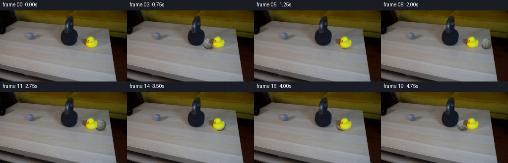
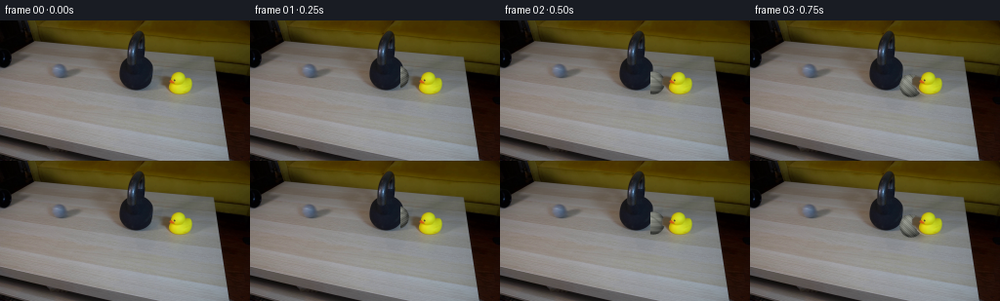
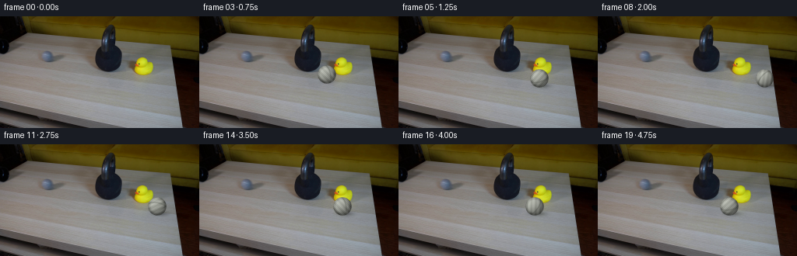
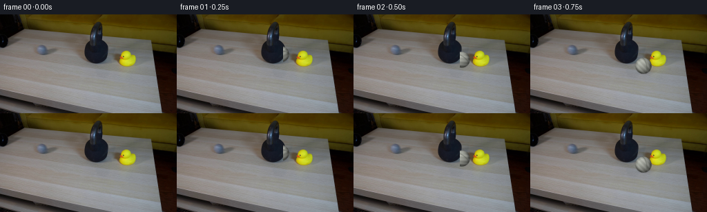
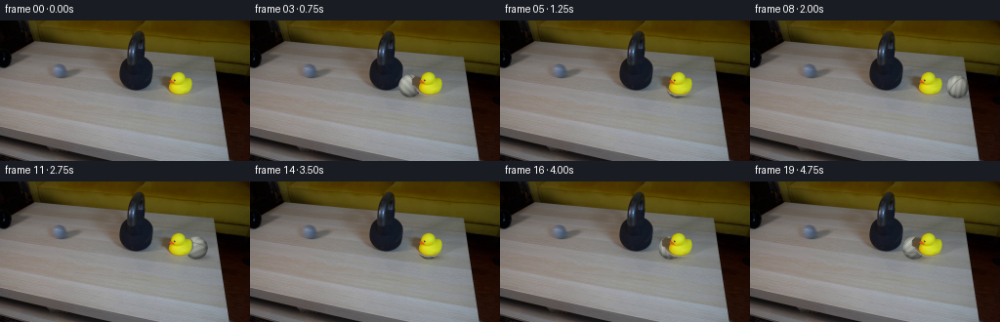
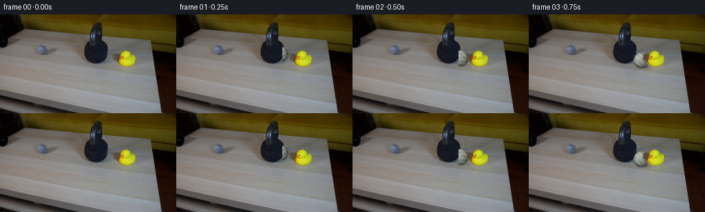

CODING AGENTS AS PIXEL WORLD MODELS
traex/DeepSeek-V4.1-Flash · 0198
点击播放 · 原生 RGB 像素
逐轮保存的候选
回放视频、检查图与代码变化。
每份候选均可单独播放。实际图片检查记录在下方工具轨迹中。
候选 01播放与检查图
点击播放 · 原生 RGB 像素


展开代码变化
--- 上一保存版本
+++ 本次保存版本
@@ -0,0 +1,229 @@
+from pathlib import Path
+
+import cv2
+import numpy as np
+from PIL import Image
+from scipy import ndimage
+
+import artifact_io
+
+
+CASE_DIR = Path(__file__).resolve().parent
+FRAME_COUNT = 20
+HEIGHT = 144
+WIDTH = 256
+
+
+def smoothstep(edge0, edge1, value):
+ t = np.clip((value - edge0) / (edge1 - edge0), 0.0, 1.0)
+ return t * t * (3.0 - 2.0 * t)
+
+
+def duck_mask(frame):
+ """Build a soft cutout so the duck can occlude the ball."""
+ hsv = cv2.cvtColor(frame, cv2.COLOR_RGB2HSV)
+ hue, saturation, value = hsv[:, :, 0], hsv[:, :, 1], hsv[:, :, 2]
+ region = np.zeros((HEIGHT, WIDTH), dtype=bool)
+ region[48:81, 160:203] = True
+
+ yellow = (
+ region
+ & (hue >= 12)
+ & (hue <= 43)
+ & (saturation >= 75)
+ & (value >= 55)
+ )
+ red = region & (saturation >= 95) & (value >= 55) & ((hue <= 13) | (hue >= 170))
+
+ count, labels, stats, _ = cv2.connectedComponentsWithStats(
+ yellow.astype(np.uint8), connectivity=8
+ )
+ main = np.zeros_like(yellow)
+ if count > 1:
+ candidates = [
+ index
+ for index in range(1, count)
+ if stats[index, cv2.CC_STAT_AREA] >= 25
+ ]
+ if candidates:
+ index = max(candidates, key=lambda item: stats[item, cv2.CC_STAT_AREA])
+ main = labels == index
+
+ main = cv2.morphologyEx(main.astype(np.uint8), cv2.MORPH_CLOSE, np.ones((3, 3), np.uint8))
+ main = ndimage.binary_fill_holes(main > 0)
+ beak = ndimage.binary_dilation(red, iterations=1) & ndimage.binary_dilation(main, iterations=3)
+ main = main | beak
+ main = ndimage.binary_dilation(main, iterations=1)
+
+ # Feather the antialiased edge while retaining the original duck pixels.
+ alpha = cv2.GaussianBlur(main.astype(np.float32), (3, 3), 0.55)
+ alpha = np.clip(alpha * 1.55, 0.0, 1.0)
+ return alpha
+
+
+def make_ball_sprite(radius=12.0, rotation=0.0):
+ """Render a small desaturated tennis ball with a rolling seam and fuzzy edge."""
+ scale = 6
+ size = int(np.ceil(radius * 2.18 * scale))
+ center = (size - 1) / 2.0
+ yy, xx = np.mgrid[:size, :size].astype(np.float32)
+ nx = (xx - center) / (radius * scale)
+ ny = (yy - center) / (radius * scale)
+ radial = np.sqrt(nx * nx + ny * ny)
+ inside = radial < 1.035
+ nz = np.sqrt(np.clip(1.0 - radial * radial, 0.0, 1.0))
+
+ light = np.array([-0.48, -0.62, 0.62], dtype=np.float32)
+ light /= np.linalg.norm(light)
+ diffuse = np.clip(nx * light[0] + ny * light[1] + nz * light[2], 0.0, 1.0)
+ rim = smoothstep(0.62, 1.02, radial)
+ shade = 0.55 + 0.42 * diffuse - 0.22 * rim
+
+ cosine = np.cos(rotation)
+ sine = np.sin(rotation)
+ rx = cosine * nx + sine * ny
+ ry = -sine * nx + cosine * ny
+
+ # One great-circle seam gives the ball a readable rolling orientation.
+ seam_plane = 0.38 * rx + 0.84 * ry + 0.39 * nz
+ seam = np.exp(-((seam_plane / 0.075) ** 2))
+
+ fiber = (
+ 0.045 * np.sin(37.0 * rx + 23.0 * ry)
+ + 0.032 * np.sin(61.0 * rx - 31.0 * ry)
+ + 0.020 * np.sin(113.0 * rx + 79.0 * ry)
+ )
+ mottle = 0.035 * np.sin(11.0 * rx + 7.0 * ry)
+
+ base = np.empty((size, size, 3), dtype=np.float32)
+ base[:, :, 0] = 150.0
+ base[:, :, 1] = 153.0
+ base[:, :, 2] = 143.0
+ base *= shade[:, :, None]
+ base += (fiber + mottle)[:, :, None] * 255.0
+ base *= (1.0 - 0.28 * seam[:, :, None])
+ base += seam[:, :, None] * np.array([15.0, 16.0, 14.0])
+
+ # Tiny irregular fibers keep the edge from looking like a clean vector circle.
+ edge_noise = (
+ 0.012 * np.sin(43.0 * np.arctan2(ny, nx) + 19.0)
+ + 0.008 * np.sin(71.0 * np.arctan2(ny, nx) - 7.0)
+ )
+ edge = smoothstep(1.025 + edge_noise, 0.94 + edge_noise, radial)
+ alpha = edge * inside
+ alpha = alpha.astype(np.float32)
+
+ rgb = np.clip(base, 0.0, 255.0).astype(np.uint8)
+ rgba = np.dstack([rgb, np.round(alpha * 255.0).astype(np.uint8)])
+ sprite = Image.fromarray(rgba, mode="RGBA").resize(
+ (max(1, size // scale), max(1, size // scale)), Image.Resampling.LANCZOS
+ )
+ return np.asarray(sprite)
+
+
+def composite_rgba(frame, sprite, left, top):
+ h, w = sprite.shape[:2]
+ x0, y0 = max(0, left), max(0, top)
+ x1, y1 = min(WIDTH, left + w), min(HEIGHT, top + h)
+ if x1 <= x0 or y1 <= y0:
+ return
+ sx0, sy0 = x0 - left, y0 - top
+ sx1, sy1 = sx0 + (x1 - x0), sy0 + (y1 - y0)
+ src = sprite[sy0:sy1, sx0:sx1].astype(np.float32)
+ alpha = src[:, :, 3:4] / 255.0
+ dst = frame[y0:y1, x0:x1].astype(np.float32)
+ frame[y0:y1, x0:x1] = np.clip(
+ src[:, :, :3] * alpha + dst * (1.0 - alpha), 0.0, 255.0
+ ).astype(np.uint8)
+
+
+def add_contact_shadow(frame, cx, cy, strength):
+ if strength <= 0.0:
+ return
+ yy, xx = np.mgrid[:HEIGHT, :WIDTH].astype(np.float32)
+ ellipse = ((xx - (cx + 4.0)) / 14.5) ** 2 + ((yy - (cy + 9.0)) / 4.4) ** 2
+ shadow = np.exp(-2.2 * ellipse) * strength
+ frame[:] = np.clip(frame.astype(np.float32) * (1.0 - shadow[:, :, None] * 0.30), 0.0, 255.0).astype(
+ np.uint8
+ )
+
+
+def ball_state(index):
+ # x, y, x-radius, y-radius, rolling angle. Frames 0-7 are the swift roll;
+ # 8 is contact, 9 is the squash, and the remainder is a damped rebound.
+ states = [
+ (146.0, 55.0, 11.6, 11.6, 0.00),
+ (151.0, 58.0, 11.6, 11.6, 0.46),
+ (157.0, 64.0, 11.6, 11.6, 1.08),
+ (165.0, 67.0, 11.6, 11.6, 1.78),
+ (174.0, 67.0, 11.6, 11.6, 2.56),
+ (183.0, 67.0, 11.6, 11.6, 3.34),
+ (192.0, 67.0, 11.6, 11.6, 4.12),
+ (201.0, 67.0, 11.6, 11.6, 4.90),
+ (212.0, 67.0, 11.3, 11.8, 5.86),
+ (212.0, 67.2, 9.8, 12.3, 6.05),
+ (207.0, 67.0, 11.4, 11.8, 6.47),
+ (202.0, 67.0, 11.6, 11.6, 6.87),
+ (197.0, 67.0, 11.6, 11.6, 7.27),
+ (192.0, 67.0, 11.6, 11.6, 7.67),
+ (187.0, 67.0, 11.6, 11.6, 8.07),
+ (182.0, 67.0, 11.6, 11.6, 8.47),
+ (177.0, 67.0, 11.6, 11.6, 8.87),
+ (172.0, 67.0, 11.6, 11.6, 9.27),
+ (168.0, 67.0, 11.6, 11.6, 9.63),
+ (165.0, 67.0, 11.6, 11.6, 9.93),
+ ]
+ return states[index]
+
+
+def render():
+ original = np.asarray(Image.open(CASE_DIR / "first_frame.png").convert("RGB"), dtype=np.uint8)
+ assert original.shape == (HEIGHT, WIDTH, 3)
+ duck_alpha = duck_mask(original)
+ frames = np.empty((FRAME_COUNT, HEIGHT, WIDTH, 3), dtype=np.uint8)
+ frames[0] = original
+
+ for index in range(1, FRAME_COUNT):
+ frame = original.copy()
+ cx, cy, rx, ry, angle = ball_state(index)
+
+ if cy > 62.0:
+ add_contact_shadow(frame, cx, cy, min(1.0, (cy - 60.0) / 8.0))
+
+ sprite = make_ball_sprite(radius=12.0, rotation=angle)
+ draw_w, draw_h = sprite.shape[1], sprite.shape[0]
+ left = int(round(cx - draw_w / 2.0))
+ top = int(round(cy - draw_h / 2.0))
+ if abs(rx - 11.6) > 0.05 or abs(ry - 11.6) > 0.05:
+ sprite = np.asarray(
+ Image.fromarray(sprite, mode="RGBA").resize(
+ (max(1, int(round(draw_w * rx / 11.6))), max(1, int(round(draw_h * ry / 11.6)))),
+ Image.Resampling.LANCZOS,
+ )
+ )
+ left = int(round(cx - sprite.shape[1] / 2.0))
+ top = int(round(cy - sprite.shape[0] / 2.0))
+
+ # The first two visible positions are clipped by the pipe mouth.
+ if index <= 2:
+ clipped = sprite.copy()
+ global_x = np.arange(left, left + clipped.shape[1])
+ clipped[:, global_x < 154, 3] = 0
+ sprite = clipped
+
+ composite_rgba(frame, sprite, left, top)
+
+ # Restore the original duck on top of the rolling ball.
+ alpha = duck_alpha[:, :, None]
+ frame[:] = np.clip(
+ original.astype(np.float32) * alpha + frame.astype(np.float32) * (1.0 - alpha),
+ 0.0,
+ 255.0,
+ ).astype(np.uint8)
+ frames[index] = frame
+
+ return frames
+
+
+if __name__ == "__main__":
+ artifact_io.save(render(), CASE_DIR)
候选 02播放与检查图
点击播放 · 原生 RGB 像素


展开代码变化
--- 上一保存版本
+++ 本次保存版本
@@ -96,9 +96,9 @@
mottle = 0.035 * np.sin(11.0 * rx + 7.0 * ry)
base = np.empty((size, size, 3), dtype=np.float32)
- base[:, :, 0] = 150.0
- base[:, :, 1] = 153.0
- base[:, :, 2] = 143.0
+ base[:, :, 0] = 187.0
+ base[:, :, 1] = 190.0
+ base[:, :, 2] = 180.0
base *= shade[:, :, None]
base += (fiber + mottle)[:, :, None] * 255.0
base *= (1.0 - 0.28 * seam[:, :, None])
@@ -115,7 +115,7 @@
rgb = np.clip(base, 0.0, 255.0).astype(np.uint8)
rgba = np.dstack([rgb, np.round(alpha * 255.0).astype(np.uint8)])
- sprite = Image.fromarray(rgba, mode="RGBA").resize(
+ sprite = Image.fromarray(rgba).resize(
(max(1, size // scale), max(1, size // scale)), Image.Resampling.LANCZOS
)
return np.asarray(sprite)
@@ -154,24 +154,24 @@
states = [
(146.0, 55.0, 11.6, 11.6, 0.00),
(151.0, 58.0, 11.6, 11.6, 0.46),
- (157.0, 64.0, 11.6, 11.6, 1.08),
- (165.0, 67.0, 11.6, 11.6, 1.78),
- (174.0, 67.0, 11.6, 11.6, 2.56),
- (183.0, 67.0, 11.6, 11.6, 3.34),
- (192.0, 67.0, 11.6, 11.6, 4.12),
- (201.0, 67.0, 11.6, 11.6, 4.90),
- (212.0, 67.0, 11.3, 11.8, 5.86),
- (212.0, 67.2, 9.8, 12.3, 6.05),
- (207.0, 67.0, 11.4, 11.8, 6.47),
- (202.0, 67.0, 11.6, 11.6, 6.87),
- (197.0, 67.0, 11.6, 11.6, 7.27),
- (192.0, 67.0, 11.6, 11.6, 7.67),
- (187.0, 67.0, 11.6, 11.6, 8.07),
- (182.0, 67.0, 11.6, 11.6, 8.47),
- (177.0, 67.0, 11.6, 11.6, 8.87),
- (172.0, 67.0, 11.6, 11.6, 9.27),
- (168.0, 67.0, 11.6, 11.6, 9.63),
- (165.0, 67.0, 11.6, 11.6, 9.93),
+ (157.0, 66.0, 11.6, 11.6, 1.08),
+ (164.0, 75.0, 11.6, 11.6, 1.78),
+ (172.0, 79.0, 11.6, 11.6, 2.50),
+ (181.0, 80.0, 11.6, 11.6, 3.30),
+ (191.0, 80.0, 11.6, 11.6, 4.10),
+ (202.0, 80.0, 11.6, 11.6, 4.90),
+ (214.0, 80.0, 11.3, 11.8, 5.88),
+ (214.0, 80.2, 9.8, 12.3, 6.08),
+ (208.0, 80.0, 11.4, 11.8, 6.50),
+ (202.0, 80.0, 11.6, 11.6, 6.90),
+ (196.0, 80.0, 11.6, 11.6, 7.30),
+ (190.0, 80.0, 11.6, 11.6, 7.70),
+ (184.0, 80.0, 11.6, 11.6, 8.10),
+ (179.0, 80.0, 11.6, 11.6, 8.50),
+ (175.0, 80.0, 11.6, 11.6, 8.88),
+ (172.0, 80.0, 11.6, 11.6, 9.22),
+ (170.0, 80.0, 11.6, 11.6, 9.50),
+ (169.0, 80.0, 11.6, 11.6, 9.70),
]
return states[index]
@@ -187,8 +187,8 @@
frame = original.copy()
cx, cy, rx, ry, angle = ball_state(index)
- if cy > 62.0:
- add_contact_shadow(frame, cx, cy, min(1.0, (cy - 60.0) / 8.0))
+ if cy > 74.0:
+ add_contact_shadow(frame, cx, cy, min(1.0, (cy - 72.0) / 7.0))
sprite = make_ball_sprite(radius=12.0, rotation=angle)
draw_w, draw_h = sprite.shape[1], sprite.shape[0]
@@ -196,7 +196,7 @@
top = int(round(cy - draw_h / 2.0))
if abs(rx - 11.6) > 0.05 or abs(ry - 11.6) > 0.05:
sprite = np.asarray(
- Image.fromarray(sprite, mode="RGBA").resize(
+ Image.fromarray(sprite).resize(
(max(1, int(round(draw_w * rx / 11.6))), max(1, int(round(draw_h * ry / 11.6)))),
Image.Resampling.LANCZOS,
)
@@ -213,13 +213,6 @@
composite_rgba(frame, sprite, left, top)
- # Restore the original duck on top of the rolling ball.
- alpha = duck_alpha[:, :, None]
- frame[:] = np.clip(
- original.astype(np.float32) * alpha + frame.astype(np.float32) * (1.0 - alpha),
- 0.0,
- 255.0,
- ).astype(np.uint8)
frames[index] = frame
return frames
候选 03播放与检查图
点击播放 · 原生 RGB 像素


展开代码变化
--- 上一保存版本
+++ 本次保存版本
@@ -154,24 +154,24 @@
states = [
(146.0, 55.0, 11.6, 11.6, 0.00),
(151.0, 58.0, 11.6, 11.6, 0.46),
- (157.0, 66.0, 11.6, 11.6, 1.08),
- (164.0, 75.0, 11.6, 11.6, 1.78),
- (172.0, 79.0, 11.6, 11.6, 2.50),
- (181.0, 80.0, 11.6, 11.6, 3.30),
- (191.0, 80.0, 11.6, 11.6, 4.10),
- (202.0, 80.0, 11.6, 11.6, 4.90),
- (214.0, 80.0, 11.3, 11.8, 5.88),
- (214.0, 80.2, 9.8, 12.3, 6.08),
- (208.0, 80.0, 11.4, 11.8, 6.50),
- (202.0, 80.0, 11.6, 11.6, 6.90),
- (196.0, 80.0, 11.6, 11.6, 7.30),
- (190.0, 80.0, 11.6, 11.6, 7.70),
- (184.0, 80.0, 11.6, 11.6, 8.10),
- (179.0, 80.0, 11.6, 11.6, 8.50),
- (175.0, 80.0, 11.6, 11.6, 8.88),
- (172.0, 80.0, 11.6, 11.6, 9.22),
- (170.0, 80.0, 11.6, 11.6, 9.50),
- (169.0, 80.0, 11.6, 11.6, 9.70),
+ (157.0, 64.0, 11.6, 11.6, 1.08),
+ (164.0, 67.0, 11.6, 11.6, 1.78),
+ (173.0, 68.0, 11.6, 11.6, 2.54),
+ (182.0, 68.0, 11.6, 11.6, 3.32),
+ (191.0, 68.0, 11.6, 11.6, 4.10),
+ (201.0, 68.0, 11.6, 11.6, 4.90),
+ (213.0, 68.0, 11.3, 11.8, 5.88),
+ (213.0, 68.2, 9.8, 12.3, 6.08),
+ (207.0, 68.0, 11.4, 11.8, 6.50),
+ (201.0, 68.0, 11.6, 11.6, 6.90),
+ (195.0, 68.0, 11.6, 11.6, 7.30),
+ (189.0, 68.0, 11.6, 11.6, 7.70),
+ (183.0, 68.0, 11.6, 11.6, 8.10),
+ (178.0, 68.0, 11.6, 11.6, 8.50),
+ (174.0, 68.0, 11.6, 11.6, 8.88),
+ (171.0, 68.0, 11.6, 11.6, 9.22),
+ (169.0, 68.0, 11.6, 11.6, 9.50),
+ (168.0, 68.0, 11.6, 11.6, 9.70),
]
return states[index]
@@ -187,8 +187,8 @@
frame = original.copy()
cx, cy, rx, ry, angle = ball_state(index)
- if cy > 74.0:
- add_contact_shadow(frame, cx, cy, min(1.0, (cy - 72.0) / 7.0))
+ if cy > 62.0:
+ add_contact_shadow(frame, cx, cy, min(1.0, (cy - 60.0) / 8.0))
sprite = make_ball_sprite(radius=12.0, rotation=angle)
draw_w, draw_h = sprite.shape[1], sprite.shape[0]
@@ -213,6 +213,13 @@
composite_rgba(frame, sprite, left, top)
+ # The ball travels behind the duck on the tabletop.
+ alpha = duck_alpha[:, :, None]
+ frame[:] = np.clip(
+ original.astype(np.float32) * alpha + frame.astype(np.float32) * (1.0 - alpha),
+ 0.0,
+ 255.0,
+ ).astype(np.uint8)
frames[index] = frame
return frames
可观测工具轨迹
实际执行的命令与返回图片。
命令 1exit 0
/bin/bash -c "pwd && rg --files -g 'prompt.txt' -g 'GENERATION_RULES.md' -g 'first_frame.png' -g '"'!**/.git/**'"'"
命令 2exit 0
/bin/bash -c "sed -n '1,240p' prompt.txt"
命令 3exit 0
/bin/bash -c "sed -n '1,280p' GENERATION_RULES.md"
命令 4exit 0
/bin/bash -c 'ls -la && file first_frame.png && identify first_frame.png 2>/dev/null || true'
命令 5exit 0
/bin/bash -c "python - <<'PY'
from PIL import Image
import numpy as np
im=Image.open('first_frame.png').convert('RGB')
a=np.array(im)
print('size', im.size, 'shape', a.shape, 'dtype', a.dtype)
print('min/max/mean',a.min(axis=(0,1)),a.max(axis=(0,1)),a.mean(axis=(0,1)))
print('unique',len(np.unique(a.reshape(-1,3),axis=0)))
# dominant colors after 16-level quantization
q=(a//16)*16+8
u,c=np.unique(q.reshape(-1,3),axis=0,return_counts=True)
for i in np.argsort(c)[-30:][::-1]: print(tuple(u[i]),c[i])
PY"命令 6exit 0
/bin/bash -c "sed -n '1,260p' artifact_io.py"
命令 7exit 0
/bin/bash -c "sed -n '1,260p' player_template.html"
命令 8exit 0
/bin/bash -c "python - <<'PY' mods=['numpy','PIL','cv2','scipy','imageio','matplotlib'] for m in mods: try: x=__import__(m); print(m,'OK',getattr(x,'__version__','')) except Exception as e: print(m,'NO',e) PY"
命令 9exit 0
/bin/bash -c "python - <<'PY'
from PIL import Image
import numpy as np
im=np.array(Image.open('first_frame.png').convert('RGB'))
# ascii luma 64x36 blocks, chars
for y in range(0,144,4):
s=''
for x in range(0,256,4):
b=im[y:y+4,x:x+4].mean((0,1)); l=b@np.array([.299,.587,.114])
s += ' .:-=+*#%@'[min(9,int(l/256*10))]
print(f'{y:03d} '+s)
PY"命令 10exit 0
/bin/bash -c "python - <<'PY'
from PIL import Image
import numpy as np
im=np.array(Image.open('first_frame.png').convert('RGB')).astype(float)
# print colors at grid points
for y in range(8,144,8):
vals=[]
for x in range(8,256,8):
b=im[y-2:y+3,x-2:x+3].mean((0,1)).astype(int); vals.append('%02x%02x%02x'%tuple(b))
print(f'{y:3}', ' '.join(vals))
PY"命令 11exit 0
/bin/bash -c "python - <<'PY'
from PIL import Image
import numpy as np, cv2
im=np.array(Image.open('first_frame.png').convert('RGB'))
hsv=cv2.cvtColor(im,cv2.COLOR_RGB2HSV)
# dump ascii category based hsv and brightness
for y in range(0,144,3):
s=''
for x in range(0,256,3):
h,sat,v=hsv[y:y+3,x:x+3].reshape(-1,3).mean(0)
r,g,b=im[y:y+3,x:x+3].reshape(-1,3).mean(0)
if v<25: c='@' # black
elif v<50: c='#'
elif sat<20: c='.' if v<100 else ':' if v<150 else '+' if v<190 else '*'
elif h<15 or h>170: c='R'
elif h<35: c='O'
elif h<55: c='Y'
elif h<95: c='G'
elif h<135: c='B'
else: c='P'
s+=c
print(f'{y:03d} {s}')
PY"命令 12exit 0
/bin/bash -c "python - <<'PY'
from PIL import Image
im=Image.open('first_frame.png').convert('RGB')
# 4x upscale nearest and bilinear for local visual candidate (not viewed directly)
im.resize((1024,576),Image.Resampling.NEAREST).save('.tmp/first_nearest.png')
im.resize((1024,576),Image.Resampling.LANCZOS).save('.tmp/first_lanczos.png')
# crop likely key object regions
for name,box in [('center',(75,25,220,130)),('objects',(130,35,225,125)),('left',(0,25,160,130)),('right',(130,40,256,144))]:
im.crop(box).resize(((box[2]-box[0])*5,(box[3]-box[1])*5),Image.Resampling.LANCZOS).save('.tmp/'+name+'.png')
print(name,box)
PY"命令 13exit 0
/bin/bash -c "python - <<'PY'
from PIL import Image
import numpy as np
im=np.array(Image.open('first_frame.png').convert('RGB'))
# segmentation rough by color, report bbox/centroid for dark, yellow, blue, grey ball components
masks={}
r,g,b=im[:,:,0].astype(int),im[:,:,1].astype(int),im[:,:,2].astype(int)
masks['yellow']=(r>100)&(g>90)&(b<90)&(g>b*1.5)&(r>b*1.4)
masks['blue']=(b>r*1.25)&(b>g*1.1)&(b>55)
masks['black']=(r<25)&(g<25)&(b<25)
masks['orange']=(r>50)&(r>g*1.6)&(g>b*1.8)&(b<40)
for name,m in masks.items():
ys,xs=np.where(m)
print(name,'count',m.sum(),'bbox', (xs.min(),ys.min(),xs.max(),ys.max()) if len(xs) else None,'centroid',(xs.mean(),ys.mean()) if len(xs) else None)
# connected comps blue/yellow/orange with stats
import cv2
for name,m in masks.items():
n,lab,stats,cents=cv2.connectedComponentsWithStats(m.astype('uint8'),8)
print('\\n',name)
for i in np.argsort(stats[1:,4])[-12:][::-1]+1:
x,y,w,h,a=stats[i]; print(' ',(int(x),int(y),int(w),int(h),int(a)), tuple(np.round(cents[i],1)))
PY"命令 14exit 0
/bin/bash -c "python - <<'PY'
from PIL import Image
import numpy as np
im=np.array(Image.open('first_frame.png').convert('RGB'))
# row segment colors / values around likely tennis ball and pipe
for y in [54,56,58,60,62,64,66,68,70,72,74,76,78,80]:
row=im[y]
# summarize runs by RGB closeness coarse; report 110..230 every 2
print('y',y, ' '.join('%02x%02x%02x'%tuple(row[x]) for x in range(120,205,3)))
PY"命令 15exit 0
/bin/bash -c "python - <<'PY'
from PIL import Image
import numpy as np
im=np.array(Image.open('first_frame.png').convert('RGB'))
# sample exact patches and edge analysis around ball/duck/kettle
for name,(x,y) in {'ball':(180,66),'duck':(184,65),'pipe_in':(140,65),'pipe_out':(150,68),'kettle':(200,85),'table':(120,100)}.items():
print(name,im[y,x])
# print RGB map in 1 px around duck / ball region at x=160..205, y=52..82 categorized by nearest of bg / yellow / grey / dark
for y in range(50,84,2):
s=''
for x in range(155,209,2):
p=im[y:y+2,x:x+2].mean((0,1)); r,g,b=p
if g>70 and r>70 and b<65: c='Y'
elif abs(r-g)<12 and abs(g-b)<12 and r>60: c='g'
elif r<35 and g<35 and b<35:c='@'
elif r>g*1.3 and g>b*1.5:c='R'
else:c='.'
s+=c
print(f'{y:02d} {s}')
PY"命令 16exit 0
/bin/bash -c "python - <<'PY'
from PIL import Image
import numpy as np
im=np.array(Image.open('first_frame.png').convert('RGB')).astype(float)
# Quantized categorical map, 2x2 blocks, x labels every 10 columns
for y in range(0,144,2):
s=''
for x in range(0,256,2):
r,g,b=im[y:y+2,x:x+2].mean((0,1))
mx=max(r,g,b); mn=min(r,g,b)
if mx<22: c='@'
elif mx<45: c='#'
elif mx<75: c='d'
elif mx<105: c='.'
elif mx<135: c='-'
elif mx<165: c='+'
elif mx<195: c='*'
else: c='%'
# color overrides
if g>70 and r>70 and b<70 and g>b*1.7: c='Y'
elif b>r*1.25 and b>g*1.1 and b>55: c='B'
elif r>g*1.5 and g>b*1.5 and r>50: c='R'
elif r>g*1.25 and g>b*1.5 and r>50: c='O'
elif g>r*1.2 and g>b*1.2 and g>50: c='G'
s+=c
print(f'{y:03d} {s}')
print(' '+''.join(str((x//10)%10) for x in range(0,256,2)))
PY"命令 17exit 0
/bin/bash -c "python - <<'PY'
from PIL import Image
import numpy as np
im=np.array(Image.open('first_frame.png').convert('RGB'))
# Print 1px categorical map around pipe from x=105..165 y=25..90, at 1px but chars for edges
# determine pipe shape based dark pixels. Print dark mask every row with runs.
for y in range(24,90):
m=(im[y,:,0]<45)&(im[y,:,1]<45)&(im[y,:,2]<45)
# runs x 100..170
xs=np.where(m[100:180])[0]+100
if len(xs):
runs=[]; st=pr=xs[0]
for x in xs[1:]:
if x>pr+1: runs.append((st,pr)); st=x
pr=x
runs.append((st,pr))
print(y,runs)
PY"命令 18exit 0
/bin/bash -c "python - <<'PY'
from PIL import Image, ImageFilter
import numpy as np, cv2
im=np.array(Image.open('first_frame.png').convert('RGB'))
g=cv2.cvtColor(im,cv2.COLOR_RGB2GRAY)
e=cv2.Canny(g,20,50)
for y in range(0,144,2):
s=''
for x in range(0,256,2):
n=e[y:y+2,x:x+2].sum()
s += '#' if n>=3 else '+' if n>=1 else ' '
print(f'{y:03d} {s}')
PY"命令 19exit 1
/bin/bash -c "python - <<'PY'
from PIL import Image
import numpy as np, cv2
im=np.array(Image.open('first_frame.png').convert('RGB'))
# kmeans colors
z=im.reshape(-1,3).astype(np.float32)
crit=(cv2.TERM_CRITERIA_EPS+cv2.TERM_CRITERIA_MAX_ITER,30,1.0)
K=14
_,lab,cen=cv2.kmeans(z,K,None,crit,8,cv2.KMEANS_PP_CENTERS)
counts=np.bincount(lab.ravel(),minlength=K)
for i in np.argsort(counts)[::-1]: print(i,counts[i],np.round(cen[i]).astype(int))
# label map 2x2 with chars sorted by brightness
order=np.argsort(cen.mean(1))
chars='@#d.:-+*%&"'$WM'"'
mp={int(k):chars[j] for j,k in enumerate(order)}
l=lab.reshape(144,256)
for y in range(0,144,2):
print(f'{y:03d} '+''.join(mp[int(l[y,x])] for x in range(0,256,2)))
PY"命令 20exit 0
/bin/bash -c "python - <<'PY'
from PIL import Image
import numpy as np, cv2
im=np.array(Image.open('first_frame.png').convert('RGB'))
z=im.reshape(-1,3).astype(np.float32)
crit=(cv2.TERM_CRITERIA_EPS+cv2.TERM_CRITERIA_MAX_ITER,30,1.0)
_,lab,cen=cv2.kmeans(z,14,None,crit,8,cv2.KMEANS_PP_CENTERS)
counts=np.bincount(lab.ravel(),minlength=14)
order=np.argsort(cen.mean(1))
chars='@#d.:-+*%&"'$WMZQ'"'
mp={int(k):chars[j] for j,k in enumerate(order)}
l=lab.reshape(144,256)
for y in range(0,144,2):
print(f'{y:03d} '+''.join(mp[int(l[y,x])] for x in range(0,256,2)))
PY"命令 21exit 0
/bin/bash -c "python - <<'PY'
from PIL import Image
import numpy as np
im=np.array(Image.open('first_frame.png').convert('RGB'))
# sample yellow bbox to find center and shape mask bounds. HSV-like conditions.
m=(im[:,:,0]>130)&(im[:,:,1]>120)&(im[:,:,2]<90)
for y in range(48,80):
xs=np.where(m[y])[0]
if len(xs): print(y,xs.min(),xs.max(),len(xs))
PY"命令 22exit 0
/bin/bash -c "python - <<'PY'
import cv2, numpy as np
from PIL import Image
im=np.array(Image.open('first_frame.png').convert('RGB'))
g=cv2.cvtColor(im,cv2.COLOR_RGB2GRAY)
for p2 in [12,16,20,24,28,32]:
cs=cv2.HoughCircles(cv2.GaussianBlur(g,(5,5),1),cv2.HOUGH_GRADIENT,dp=1,minDist=8,param1=40,param2=p2,minRadius=4,maxRadius=22)
print('p2',p2, None if cs is None else np.round(cs[0],1).tolist())
PY"命令 23exit 0
/bin/bash -c "python - <<'PY'
from PIL import Image
import numpy as np
im=np.array(Image.open('first_frame.png').convert('RGB'))
# compute color edge for kettle: radial profiles from candidates
for cx,cy in [(206,83),(205,84),(206,85),(207,84),(203,80),(204,81),(207,82)]:
print('center',cx,cy)
for r in range(0,31,3):
vals=[]
for ang in np.linspace(0,2*np.pi,24,endpoint=False):
x=int(round(cx+r*np.cos(ang))); y=int(round(cy+r*np.sin(ang)))
if 0<=x<256 and 0<=y<144: vals.append(im[y,x].mean())
print(r,round(np.mean(vals),1),round(np.std(vals),1))
PY"命令 24exit 0
/bin/bash -c "python - <<'PY'
from PIL import Image
import numpy as np
im=np.array(Image.open('first_frame.png').convert('RGB'))
# at x/y around 139,53 hough, print 29x29 patch categories at exact resolution
for y in range(36,72):
s=''
for x in range(122,158):
r,g,b=im[y,x]
if r<40 and g<40 and b<40:c='@'
elif max(r,g,b)<70:c='#'
elif max(r,g,b)<100:c='d'
elif max(r,g,b)<130:c='.'
elif max(r,g,b)<160:c='-'
elif max(r,g,b)<190:c='+'
elif max(r,g,b)<220:c='*'
else:c='%'
if b>r*1.2 and b>g*1.08 and b>45:c='B'
if r>g*1.4 and g>b*1.5 and r>60:c='R'
if r>90 and g>80 and b<80 and r>b*1.5:c='Y'
s+=c
print(f'{y:03d} {s}')
PY"命令 25exit 0
/bin/bash -c "python - <<'PY'
from PIL import Image
import numpy as np
im=np.array(Image.open('first_frame.png').convert('RGB'))
# At y=53, detect dark run and around values
for y in [40,45,50,55,60,65,70]:
print('\\ny',y)
for x in range(115,165):
r,g,b=im[y,x];
if x%5==0: print()
print('%3d:%02x%02x%02x'%(x,r,g,b),end=' ')
print()
PY"命令 26exit 0
/bin/bash -c "python - <<'PY'
from PIL import Image
import numpy as np
im=np.array(Image.open('first_frame.png').convert('RGB'))
# estimate pipe: dark oval from x=123..156 y~37..71; find row/col dark threshold bboxes in subregion
reg=im[30:80,115:170]
m=(reg.max(2)<40)
for y in range(reg.shape[0]):
xs=np.where(m[y])[0]
if len(xs)>8: print(30+y,115+xs.min(),115+xs.max(),len(xs))
# ball bbox threshold yellow-like around 170..200 50..80
reg=im[45:85,165:205]
m=(reg[:,:,0]>80)&(reg[:,:,1]>80)&(reg[:,:,2]<100)&(reg[:,:,1]>reg[:,:,2]*1.4)
for y in range(reg.shape[0]):
xs=np.where(m[y])[0]
if len(xs): print('ball',45+y,165+xs.min(),165+xs.max(),len(xs))
PY"命令 27exit 0
/bin/bash -c "python - <<'PY'
from PIL import Image
import numpy as np
im=np.array(Image.open('first_frame.png').convert('RGB'))
# print image in sixel? no. create descriptive block map for center crop with color labels at 1px x 1px encoded.
# Determine pipe end direction: at right end x 153-156, see y dark interval / gradients
for x in range(145,165):
ys=np.where(im[:,x].max(1)<50)[0]
ys=ys[(ys>30)&(ys<80)]
if len(ys): print('x',x,'dark y',ys.min(),ys.max(),len(ys),'vals',im[ys.min(),x],im[ys.max(),x])
PY"命令 28exit 0
/bin/bash -c "python - <<'PY'
from PIL import Image
import numpy as np
im=np.array(Image.open('first_frame.png').convert('RGB'))
# Rows x 155-225 around ball and kettle, determine image features via gradients / avg columns
for x in range(150,230,5):
col=im[40:120,x].mean(1)
print(x, ' '.join(f'{int(v):3d}' for v in col[::5]))
PY"命令 29exit 0
/bin/bash -c "python - <<'PY'
from PIL import Image
import numpy as np
im=np.array(Image.open('first_frame.png').convert('RGB'))
# dump selected pixel colors at likely kettle, ball and background
for y in range(40,121,5):
print('y',y, ' '.join(f'{x}:{im[y,x,0]:02x}{im[y,x,1]:02x}{im[y,x,2]:02x}' for x in range(170,241,5)))
PY"命令 30exit 0
/bin/bash -c "python - <<'PY'
from PIL import Image
import numpy as np
im=np.array(Image.open('first_frame.png').convert('RGB'))
# print RGB around kettle edge/object to infer its size and segmentation, coarse patch means at 5px
for y in range(45,121,5):
s=''
for x in range(195,241,2):
r,g,b=im[y:y+5,x:x+2].mean((0,1))
if max(r,g,b)<50:c='@'
elif max(r,g,b)<90:c='#'
elif max(r,g,b)<120:c='d'
elif max(r,g,b)<150:c='.'
elif max(r,g,b)<180:c='-'
elif max(r,g,b)<210:c='+'
else:c='%'
if r>g*1.3 and g>b*1.4 and r>50:c='K'
s+=c
print(y,s)
PY"命令 31exit 0
/bin/bash -c "python - <<'PY'
from PIL import Image
import numpy as np
im=np.array(Image.open('first_frame.png').convert('RGB'))
# determine grayscale ball patch size via difference from local median/blur
import cv2
blur=cv2.GaussianBlur(im,(31,31),0)
d=np.abs(im.astype(int)-blur.astype(int)).max(2)
for y in range(40,85):
s=''
for x in range(145,215):
v=d[y,x]
s+='#' if v>30 else '+' if v>15 else ' '
print(f'{y:03d} {s}')
PY"命令 32exit 0
/bin/bash -c "python - <<'PY'
from PIL import Image
import numpy as np
im=np.array(Image.open('first_frame.png').convert('RGB'))
# Extract likely background via median over frames? only one. print per-pixel dark region to identify pipe opening geometry.
# Report RGB cluster values in black pipe region x123-156 y36-72; find bright tube rim pixels.
reg=im[36:72,123:157]
for k in range(3):
print(k,reg[:,:,k].min(),reg[:,:,k].max(),np.percentile(reg[:,:,k],[1,10,50,90,99]))
# bbox of yellow ball based saturation
import cv2
hsv=cv2.cvtColor(im,cv2.COLOR_RGB2HSV)
m=(hsv[:,:,0]>20)&(hsv[:,:,0]<40)&(hsv[:,:,1]>100)&(hsv[:,:,2]>70)
ys,xs=np.where(m)
print('yellow',xs.min(),xs.max(),ys.min(),ys.max())
PY"命令 33exit 0
/bin/bash -c "python - <<'PY'
from PIL import Image
import numpy as np
im=np.array(Image.open('first_frame.png').convert('RGB'))
# Save nearest crops as PPM for maybe no image viewing available, but inspect via base64 impossible.
# Check if terminal supports iTerm image no. Let's output a compact pixel color histogram in central bands.
for y in range(45,82,3):
print('y',y,'x145-210',[(x,tuple(im[y,x])) for x in range(145,211,5)])
PY"命令 34exit 0
/bin/bash -c "python - <<'PY'
from PIL import Image
import numpy as np
im=np.array(Image.open('first_frame.png').convert('RGB'))
# detailed category map left region x30..110 y0..80 at 1px char
for y in range(0,81):
s=''
for x in range(30,111):
r,g,b=map(int,im[y,x]);
mx=max(r,g,b)
if mx<35:c='@'
elif mx<60:c='#'
elif mx<85:c='d'
elif mx<110:c='.'
elif mx<135:c='-'
elif mx<160:c='+'
elif mx<185:c='*'
elif mx<210:c='%'
else:c='W'
if b>r*1.22 and b>g*1.08 and b>45:c='B'
elif r>g*1.45 and g>b*1.45 and r>55:c='R'
elif r>g*1.25 and g>b*1.45 and r>55:c='O'
elif g>r*1.25 and g>b*1.25 and g>50:c='G'
s+=c
print(f'{y:03d} {s}')
PY"命令 35exit 0
/bin/bash -c "python - <<'PY'
from PIL import Image
import numpy as np
im=np.array(Image.open('first_frame.png').convert('RGB'))
# blue region x54..70 y40..65 exact rgb
for y in range(40,66):
s=''
for x in range(50,75):
r,g,b=map(int,im[y,x]);
if b>r*1.25 and b>g*1.08 and b>45:c='B'
elif max(r,g,b)<30:c='@'
elif max(r,g,b)<60:c='#'
elif max(r,g,b)<90:c='d'
elif max(r,g,b)<120:c='.'
elif max(r,g,b)<150:c='-'
elif max(r,g,b)<180:c='+'
elif max(r,g,b)<210:c='*'
else:c='%'
s+=c
print(f'{y:03d} {s}')
PY"命令 36exit 0
/bin/bash -c "python - <<'PY'
from PIL import Image
import numpy as np
im=np.array(Image.open('first_frame.png').convert('RGB'))
for y in range(60,112,2):
s=''
for x in range(165,236):
r,g,b=map(int,im[y,x]); mx=max(r,g,b); mn=min(r,g,b)
if b>r*1.25 and b>g*1.08 and b>45:c='B'
elif r>g*1.45 and g>b*1.45 and r>55:c='R'
elif r>g*1.2 and g>b*1.35 and r>70:c='Y'
elif mx<25:c='@'
elif mx<50:c='#'
elif mx<75:c='d'
elif mx<100:c='.'
elif mx<125:c='-'
elif mx<150:c='+'
elif mx<175:c='*'
elif mx<200:c='%'
else:c='W'
s+=c
print(f'{y:03d} {s}')
PY"命令 37exit 0
/bin/bash -c "python - <<'PY'
from PIL import Image
import numpy as np
im=np.array(Image.open('first_frame.png').convert('RGB'))
# object boundaries against expected table background at center; compute row medians and anomalies
for y in range(52,80):
row=im[y,160:220]
# output x where saturation > 60, sorted groups
import cv2
hsv=cv2.cvtColor(row.reshape(1,-1,3),cv2.COLOR_RGB2HSV)[0]
xs=np.where(hsv[:,1]>60)[0]+160
if len(xs):
runs=[];st=pr=xs[0]
for x in xs[1:]:
if x>pr+1:runs.append((st,pr));st=x
pr=x
runs.append((st,pr))
print(y,runs)
PY"命令 38exit 0
/bin/bash -c "python - <<'PY'
from PIL import Image
import numpy as np
im=np.array(Image.open('first_frame.png').convert('RGB'))
# inspect duck silhouette by saturation / colors at x160..200, y50..80 exact map 1 px
for y in range(50,81):
s=''
for x in range(160,201):
r,g,b=map(int,im[y,x]);
hsv=None
# classify by hue via cv2 single pixel
import cv2
h,sa,v=cv2.cvtColor(np.uint8([[[r,g,b]]]),cv2.COLOR_RGB2HSV)[0,0]
if sa>100 and 15<=h<=40:c='Y'
elif sa>50 and (h<15 or h>170):c='R'
elif sa>60 and 80<h<130:c='B'
elif max(r,g,b)<25:c='@'
elif max(r,g,b)<50:c='#'
elif max(r,g,b)<75:c='d'
elif max(r,g,b)<100:c='.'
elif max(r,g,b)<125:c='-'
elif max(r,g,b)<150:c='+'
elif max(r,g,b)<175:c='*'
elif max(r,g,b)<200:c='%'
else:c='W'
s+=c
print(f'{y:03d} {s}')
PY"命令 39exit 0
/bin/bash -c "python - <<'PY'
from PIL import Image
import numpy as np
im=np.array(Image.open('first_frame.png').convert('RGB'))
# inspect blue object around x58,y50 high res values
for y in range(43,60):
print('y',y,' '.join(f'{x}:{im[y,x,0]:02x}{im[y,x,1]:02x}{im[y,x,2]:02x}' for x in range(53,71)))
PY"命令 40exit 0
/bin/bash -c "python - <<'PY'
from PIL import Image
import numpy as np
im=np.array(Image.open('first_frame.png').convert('RGB'))
# What is blue at x134? pixel map around it
for y in range(18,46):
print('y',y,' '.join(f'{x}:{im[y,x,0]:02x}{im[y,x,1]:02x}{im[y,x,2]:02x}' for x in range(130,150)))
PY"命令 41exit 0
/bin/bash -c "python - <<'PY'
from PIL import Image
import numpy as np
im=np.array(Image.open('first_frame.png').convert('RGB'))
# centerline table background around y=60..75 x160..220; identify ball disc dimensions from colors versus table
# median filter compare
import cv2
bg=cv2.medianBlur(im,31)
d=np.linalg.norm(im.astype(float)-bg.astype(float),axis=2)
for th in [10,15,20,25,30,35,40]:
m=d>th
n,lab,st,cen=cv2.connectedComponentsWithStats(m.astype('uint8'),8)
print('th',th)
for i in np.argsort(st[1:,4])[-8:][::-1]+1:
x,y,w,h,a=st[i]
if 145<x<215 and 40<y<90: print((x,y,w,h,a),cen[i])
PY"命令 42exit 0
/bin/bash -c "python - <<'PY'
from PIL import Image
import numpy as np
im=np.array(Image.open('first_frame.png').convert('RGB'))
# Object anomaly bbox excluding duck: local median diff, connected comps
import cv2
bg=cv2.medianBlur(im,31)
d=np.linalg.norm(im.astype(float)-bg.astype(float),axis=2)
m=(d>18).astype('uint8')
# dilate then comp
m=cv2.dilate(m,np.ones((3,3),np.uint8))
n,lab,st,cen=cv2.connectedComponentsWithStats(m,8)
for i in np.argsort(st[1:,4])[-25:][::-1]+1:
x,y,w,h,a=st[i]; print((int(x),int(y),int(w),int(h),int(a)),tuple(np.round(cen[i],1)))
PY"命令 43exit 0
/bin/bash -c "python - <<'PY'
from PIL import Image
import numpy as np
im=np.array(Image.open('first_frame.png').convert('RGB'))
for y in [10,20,30,35,40,45,50,55,60,65,70,75,80,90,100,110,120,130]:
print('y',y)
for x in range(0,121,10):
print(f'{x}:{im[y,x,0]:02x}{im[y,x,1]:02x}{im[y,x,2]:02x}',end=' ')
print()
PY"命令 44exit 1
/bin/bash -c "python - <<'PY'
from PIL import Image
import numpy as np
im=np.array(Image.open('first_frame.png').convert('RGB'))
# Use cv2 inpaint to create background plate candidates: mask all salient objects (pipe, ball, duck, kettle)
mask=np.zeros((144,256),np.uint8)
# hardcoded based on inspection
mask[34:75,118:160]=255 # pipe
mask[48:80,160:202]=255 # ball/duck
mask[32:125,198:256]=255 # kettle/right dark
# maybe background mask too aggressive; only show stats
b=cv2.inpaint(im,mask,5,cv2.INPAINT_TELEA)
Image.fromarray(b).save('.tmp/bg_inpaint.png')
Image.fromarray(np.hstack([im,b])).resize((1024,288),Image.Resampling.NEAREST).save('.tmp/bg_compare.png')
PY"命令 45exit 0
/bin/bash -c "python - <<'PY'
from PIL import Image
import numpy as np
im=np.array(Image.open('first_frame.png').convert('RGB'))
# dark run extents x190..255 per row
for y in range(30,105):
m=im[y,:,0].astype(int)+im[y,:,1]+im[y,:,2] < 100
xs=np.where(m[190:])[0]+190
if len(xs):
runs=[]; st=pr=xs[0]
for x in xs[1:]:
if x>pr+1: runs.append((int(st),int(pr)));st=x
pr=x
runs.append((int(st),int(pr)))
print(y,runs)
PY"命令 46exit 0
/bin/bash -c 'MPLCONFIGDIR=.tmp python generate.py'
命令 47exit 0
/bin/bash -c "python - <<'PY'
from PIL import Image
import numpy as np
from pathlib import Path
orig=np.array(Image.open('first_frame.png').convert('RGB'))
frames=np.stack([np.array(Image.open(f'frames/{i:02d}.png').convert('RGB')) for i in range(20)])
print('shape/dtype',frames.shape,frames.dtype)
print('frame0 exact',np.array_equal(frames[0],orig),'maxdiff',np.abs(frames[0].astype(int)-orig).max())
for i in range(1,20):
d=np.abs(frames[i].astype(int)-frames[i-1].astype(int))
changed=np.any(d>0,axis=2)
print(i,'changed',changed.sum(),'mean',round(d.mean(),2),'max',d.max())
# save montage with all 20 frames at 2x, plus inspection existing
sheet=Image.new('RGB',(256*5,144*4+80),(24,27,32))
from PIL import ImageDraw
d=ImageDraw.Draw(sheet)
for i in range(20):
x=(i%5)*256;y=(i//5)*(144+20)+20
sheet.paste(Image.fromarray(frames[i]),(x,y))
d.text((x+5,y-16),f'{i:02d}',fill='white')
sheet.resize((1280,1232),Image.Resampling.NEAREST).save('.tmp/all_frames.png')
# save crop animation sheet around ball/pipe
crop=Image.new('RGB',(110*5,65*4+80),(24,27,32))
d=ImageDraw.Draw(crop)
for i in range(20):
x=(i%5)*110;y=(i//5)*(65+20)+20
crop.paste(Image.fromarray(frames[i,25:90,120:230]),(x,y))
d.text((x+5,y-16),f'{i:02d}',fill='white')
crop.resize((1100,1300),Image.Resampling.NEAREST).save('.tmp/crop_frames.png')
PY"命令 48exit 0
/bin/bash -c "python - <<'PY'
from PIL import Image
import numpy as np
frames=np.stack([np.array(Image.open(f'frames/{i:02d}.png').convert('RGB')) for i in range(20)])
# 2x2 color categories around action region, 6 selected frames
for idx in [0,1,2,3,4,6,8,9,10,12,15,19]:
im=frames[idx]
print('\\nFRAME',idx)
for y in range(46,82,2):
s=''
for x in range(118,230,2):
p=im[y:y+2,x:x+2].mean((0,1)); r,g,b=p
if g>70 and r>70 and b<75 and g>b*1.5:c='Y'
elif b>r*1.22 and b>g*1.08 and b>45:c='B'
elif r<35 and g<35 and b<35:c='@'
elif max(p)<65:c='#'
elif max(p)<95:c='d'
elif max(p)<125:c='.'
elif max(p)<155:c='-'
elif max(p)<185:c='+'
elif max(p)<215:c='*'
else:c='%'
s+=c
print(f'{y:03d} {s}')
PY"命令 49exit 0
/bin/bash -c "python - <<'PY'
import generate, numpy as np
from PIL import Image
im=np.array(Image.open('first_frame.png').convert('RGB'))
a=generate.duck_mask(im)
ys,xs=np.where(a>.05)
print('duck alpha bbox',xs.min(),ys.min(),xs.max(),ys.max(),'area',len(xs),'sum',a.sum(),'max',a.max())
for y in range(48,80,2):
print(f'{y:03d} '+''.join('@' if a[y,x]>.85 else '+' if a[y,x]>.3 else '.' if a[y,x]>.03 else ' ' for x in range(158,204)))
PY"命令 50exit 0
/bin/bash -c "python - <<'PY'
from PIL import Image
import numpy as np
frames=np.stack([np.array(Image.open(f'frames/{i:02d}.png').convert('RGB')) for i in range(20)])
# object detect using yellow/grey in action region. ball sprite is neutral but contrast from table. list ball centroid from hand states; inspect pixel patch means
for i in range(20):
cx,cy,*_=__import__('generate').ball_state(i)
print(i,cx,cy)
PY"命令 51exit 0
/bin/bash -c 'MPLCONFIGDIR=.tmp python generate.py'
命令 52exit 0
/bin/bash -c "python - <<'PY'
from PIL import Image
import numpy as np
frames=np.stack([np.array(Image.open(f'frames/{i:02d}.png').convert('RGB')) for i in range(20)])
# Report sprite visibility via difference from original in lower action band
orig=frames[0]
for i in range(1,20):
d=np.abs(frames[i].astype(int)-orig.astype(int)).max(2)
m=d>8
ys,xs=np.where(m)
print(i,'pixels',m.sum(),'bbox',(xs.min(),ys.min(),xs.max(),ys.max()) if len(xs) else None,'max',d.max())
# produce 20-frame sheet and a focused crop sheet for review
from PIL import ImageDraw
crop=Image.new('RGB',(110*5,75*4+80),(24,27,32)); draw=ImageDraw.Draw(crop)
for i in range(20):
x=(i%5)*110; y=(i//5)*(75+20)+20
crop.paste(Image.fromarray(frames[i,30:105,120:230]),(x,y)); draw.text((x+5,y-16),f'{i:02d}',fill='white')
crop.resize((1100,1480),Image.Resampling.NEAREST).save('.tmp/crop_frames2.png')
PY"命令 53exit 0
/bin/bash -c "python - <<'PY'
from PIL import Image
import numpy as np
frames=np.stack([np.array(Image.open(f'frames/{i:02d}.png').convert('RGB')) for i in range(20)])
# Print 3x3 block categorical map for selected frames focusing lower table and ball
for idx in [1,2,3,4,5,6,7,8,9,10,12,15,19]:
im=frames[idx]
print('\\nFRAME',idx)
for y in range(52,100,3):
s=''
for x in range(140,232,3):
p=im[y:y+3,x:x+3].mean((0,1)); r,g,b=p
if g>65 and r>65 and b<70 and g>b*1.45:c='Y'
elif max(p)<38:c='@'
elif max(p)<70:c='#'
elif max(p)<100:c='d'
elif max(p)<125:c='.'
elif max(p)<150:c='-'
elif max(p)<175:c='+'
elif max(p)<200:c='*'
elif max(p)<225:c='%'
else:c='W'
s+=c
print(f'{y:03d} {s}')
PY"命令 54exit 0
/bin/bash -c 'MPLCONFIGDIR=.tmp python generate.py'
命令 55exit 0
/bin/bash -c "python - <<'PY'
from PIL import Image
import numpy as np
frames=np.stack([np.array(Image.open(f'frames/{i:02d}.png').convert('RGB')) for i in range(20)])
orig=frames[0]
# verify duck unchanged in all frames where not expected overlap: mask bbox compare
import generate
a=generate.duck_mask(orig)
for i in range(20):
m=a>.9
d=np.abs(frames[i].astype(int)-orig.astype(int)).max(2)
print(i,'duck core diff max',d[m].max(),'count>2',np.sum(d[m]>2),'total changed',np.sum(d>0))
# Save contact sheet
from PIL import ImageDraw
sheet=Image.new('RGB',(256*5,(144+21)*4),(24,27,32)); draw=ImageDraw.Draw(sheet)
for i in range(20):
x=(i%5)*256; y=(i//5)*(144+21)+21
sheet.paste(Image.fromarray(frames[i]),(x,y)); draw.text((x+5,y-17),f'{i:02d} {i/4:.2f}s',fill='white')
sheet.resize((1280,1320),Image.Resampling.NEAREST).save('.tmp/final_sheet.png')
PY"命令 56exit 0
/bin/bash -c "python - <<'PY'
from pathlib import Path
from PIL import Image
import numpy as np
import json
p=Path('.')
frames=np.stack([np.array(Image.open(p/'frames'/f'{i:02d}.png').convert('RGB')) for i in range(20)])
orig=np.array(Image.open('first_frame.png').convert('RGB'))
print('frames',frames.shape,frames.dtype)
print('frame00_identical',np.array_equal(frames[0],orig))
print('frame_count',len(frames),'fps=4 duration=5s')
print('all_uint8',frames.dtype==np.uint8)
print('minmax',int(frames.min()),int(frames.max()))
print('pixels_npz', (p/'pixels.npz').stat().st_size, 'index_html', (p/'index.html').stat().st_size)
z=np.load('pixels.npz')['pixels']
print('npz',z.shape,z.dtype,'firstpacked_match',np.array_equal(z[:,:,0],((frames[0,:,:,0].astype(np.uint32)<<16)|(frames[0,:,:,1].astype(np.uint32)<<8)|frames[0,:,:,2])))
print('index_has_data', 'const DATA=' in (p/'index.html').read_text())
PY"命令 57exit 0
/bin/bash -c "python - <<'PY'
from pathlib import Path
p=Path('.')
for name in ['generate.py','pixels.npz','index.html','inspection.png','transition_check.png','frames/00.png','frames/19.png']:
q=p/name
print(name, 'OK' if q.exists() else 'MISSING', q.stat().st_size if q.exists() else '')
PY"命令 58exit 0
/bin/bash -c 'git status --short 2>/dev/null || true'
保存候选 3 份；完成命令 58 次；可验证图片返回 0 张。原始 API 响应与完整日志保留在本地。